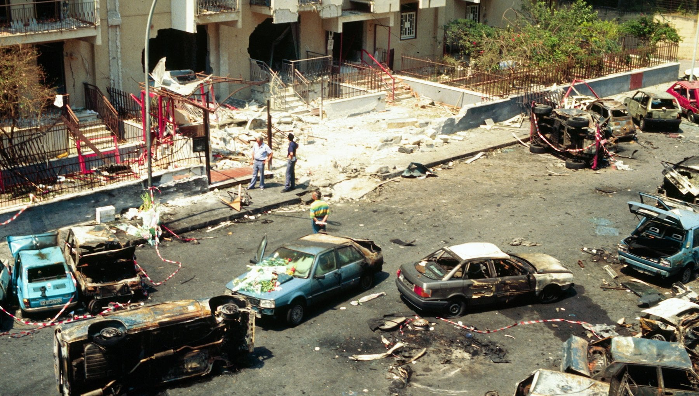
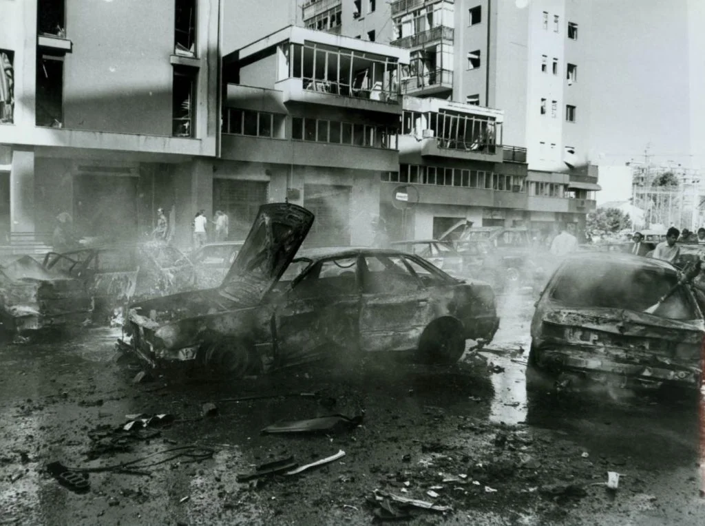

SCROLL TO READ
il video visto con la professoressa giannatasio tratta la storia della mafia e le varie stragi annesse.
WITH
YEAR
STATUS
FABIO TELLOLI
2023
FINISHED

Il 23 maggio 1992, Giovanni Falcone, sua moglie Francesca Morvillo e tre agenti di scorta persero la vita nell'esplosione di un'auto bomba sulla strada che collegava l'aeroporto di Punta Raisi a Palermo
Solo pochi mesi dopo, il 19 luglio 1992, Paolo Borsellino, insieme a cinque membri della sua scorta, fu vittima di un'altra esplosione devastante che distrusse l'ingresso dell'edificio in cui abitava a Palermo.


Le stragi di Falcone e Borsellino rappresentarono una svolta fondamentale nella lotta contro la mafia, poiché scossero profondamente la coscienza collettiva dell'Italia.